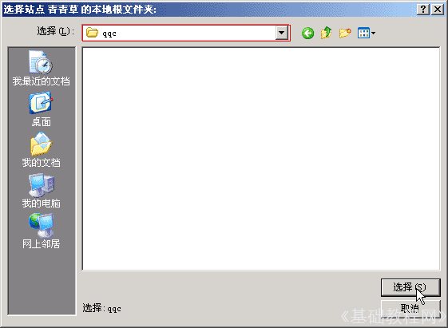

Dreamweaver 8 基础入门教程
一、新建站点 返回
网页的内容除了文字以外，还有图片、音乐、动画等等，它们共同构成了一个网站，把它们联系在一起的目录页称作“主页”，下面我们通过一个练习来学习；
1、启动Dreamweaver
1）点击“开始－所有程序－Macromedia－Macromedia Dreamweaver 8”， ；
；
2）启动后显示的是起始页，窗口右边和下边都有一个侧边栏，侧边栏中间有个折叠按钮；
2、创建新站点
在右边的侧边栏中间，在文件面板上找到一个蓝色的“管理站点”链接，点一下；
出来一个“管理站点”的对话框，里面现在还是空的，点右上角的“新建”按钮，选择“站点”命令，出来一个面板；
1）这时候就开始进行站点的创建步骤，把中间站点的名字改为“青青草”，第二行的站点地址不动它，点“下一步”；
2）在第二个页面中，直接点“下一步”进入第三页，这儿不需要服务器技术；
3）这时出来保存位置的对话框，点一下右边的小包图标，找一下自己的文件夹；
在出来的文件夹浏览对话框中，找到D:盘自己的文件夹，这时里面是空的，我们要新建一个文件夹，点一下右上角的小包“新建按钮”，把文件夹的名称改成字母缩写；
打开这个新建的 qqc 文件夹，点右下角的“选择”按钮即可，注意这时候上边的位置里显示的是“qqc”；

这时候返回到页面，中间显示的是我们刚才选择的保存文件夹(在开始的时候直接输入也可以)，点“下一步”继续；
4）在中间的“本地/网络”上点一下，弹出一个下拉列表，选择第一个“无”，点“下一步”继续；
5）这时候就出来了“总结”页面，显示一下刚才的设置情况，点“完成”即可；
6）这样就新建好了一个站点，注意选择文件夹那一步可以直接输入进去；
这时候“管理站点”面板里头就有了一个站点，点“完成”返回，在右边的侧边栏中，也可以看到一个名为“青青草”的站点；
由于是新建的，里面还是空的，后面我们会逐渐添加各个文件；
本节学习了创建新站点的基本方法，难点在选择文件夹那一步，如果你成功地理解并完成了练习，请继续学习下一课内容；
本教程由86团学校TeliuTe制作|著作权所有
基础教程网：http://teliute.org/
美丽的校园……
转载和引用本站内容，请保留作者和本站链接。